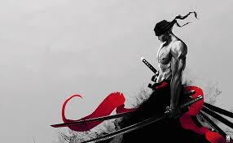

Roronoa Zoro (ロロノア・ゾロ, Roronoa Zoro, spelled as "Roronoa Zolo" in some English adaptations), also known as "Pirate Hunter" Zoro (海賊狩りのゾロ, Kaizoku-Gari no Zoro), is a fictional character created by Japanese manga artist Eiichiro Oda who appears in the manga series and media franchise One Piece. He first appeared in the third chapter of the One Piece manga, published in the manga magazine Weekly Shōnen Jump in 1997. Zoro is the first crewmate to join Monkey D. Luffy to be part of his crew of pirates, after he is rescued by Luffy from execution. Zoro is a highly skilled swordsman and serves as the crew's combatant,[a] though he possesses an extremely poor sense of direction which recurs as a running gag throughout the series.
Wikipedia 